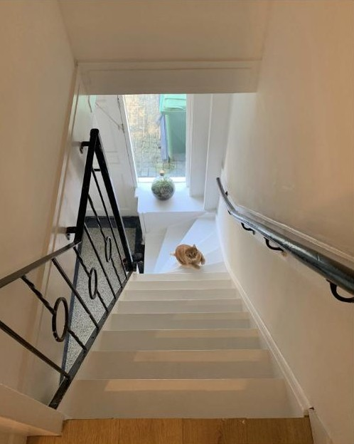
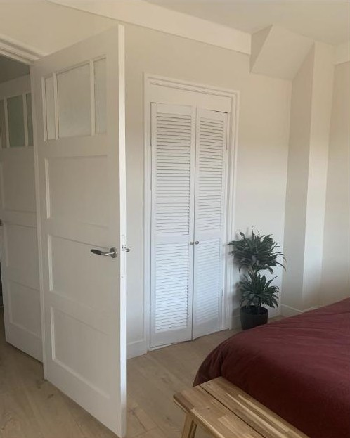
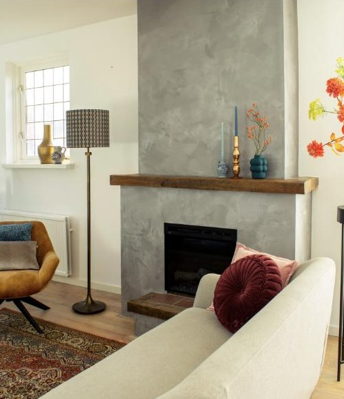
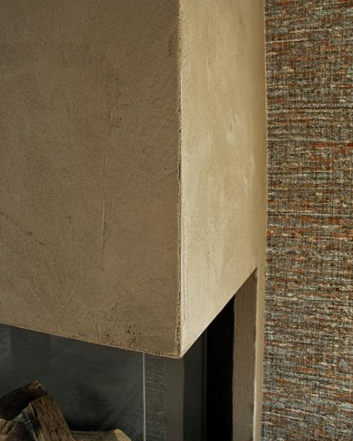

Een mooie afwerking begint met goede voorbereiding. Daarna zorgt SVA voor een egaal en strak resultaat.
Muren en plafonds met een gladde, egale afwerking. Eerst worden de ondergronden zorgvuldig voorbereid, daarna volgt het stucwerk.




SVA is gespecialiseerd in speciaal stucwerk, zoals betonlook. Zo krijgt een wand of haardpartij een industriële uitstraling met een moderne touch.
Wanden spuiten voor een egaal en strak resultaat, nadat de ondergrond goed is voorbereid.
Muren, deuren en kozijnen afgewerkt, zodat je ruimte er weer fris uitziet.
Niet zeker welke afwerking bij jouw ruimte past? Stuur een berichtje voor advies.
Bel of stuur een berichtje over jouw plannen.
Je ontvangt een vrijblijvende offerte.
Goede voorbereiding is de basis van een mooie afwerking.
Het werk wordt vakkundig en strak opgeleverd.